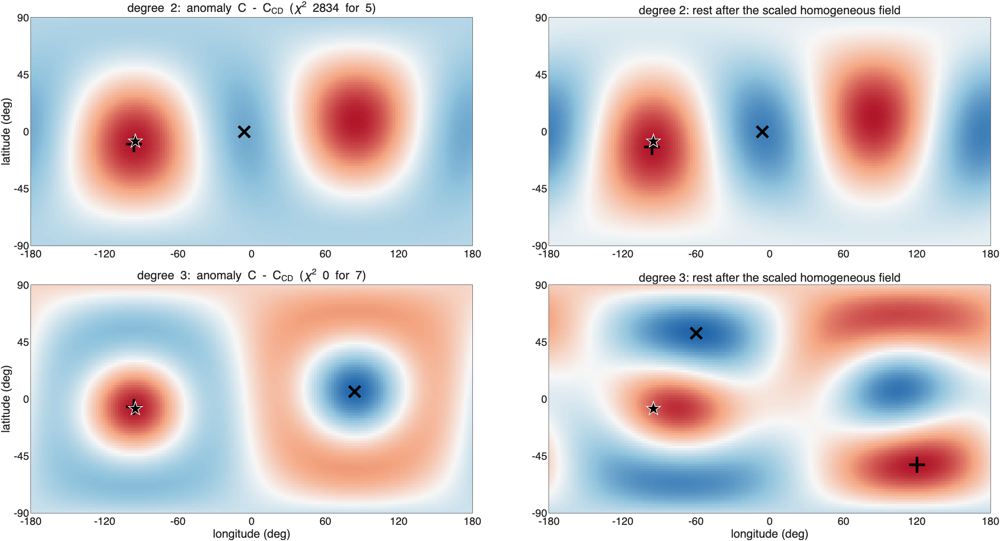
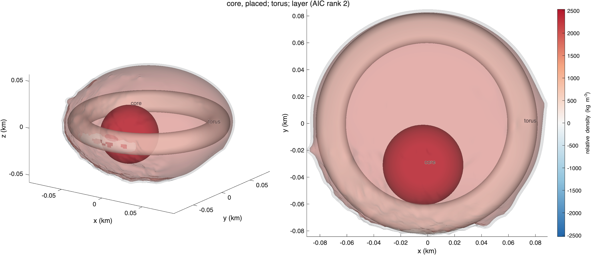
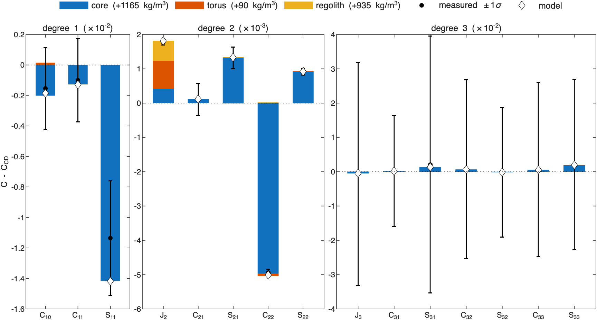
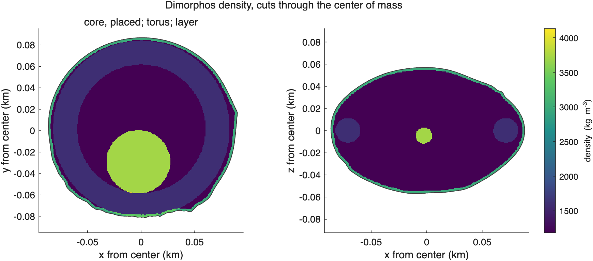
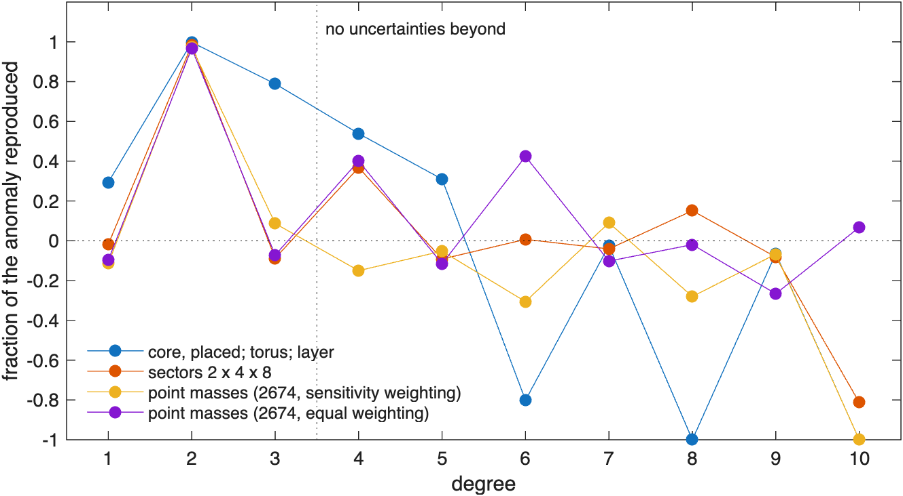
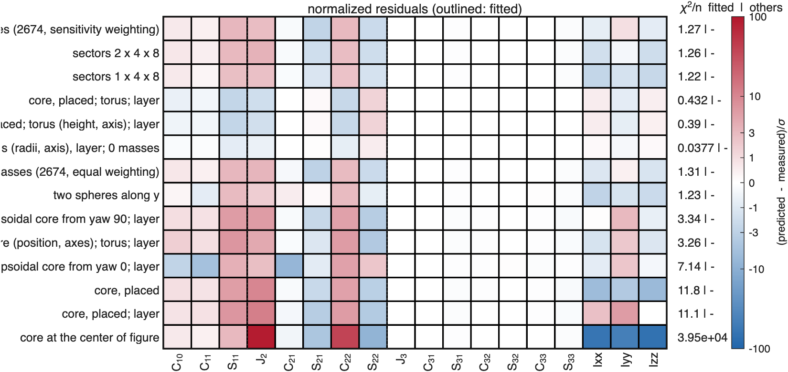
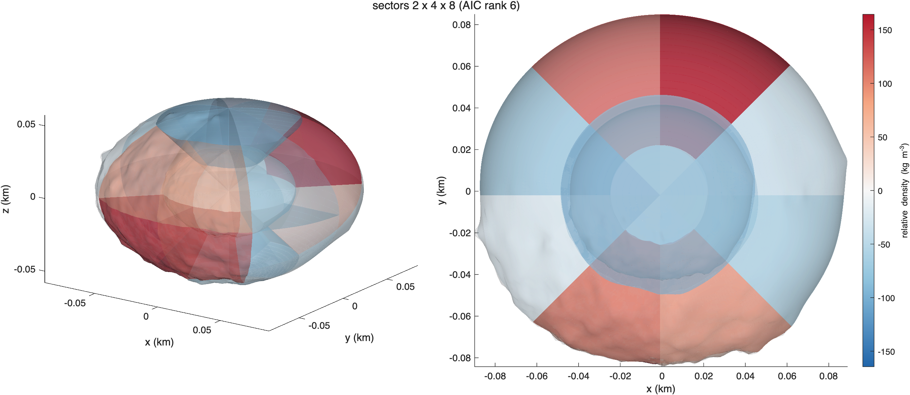
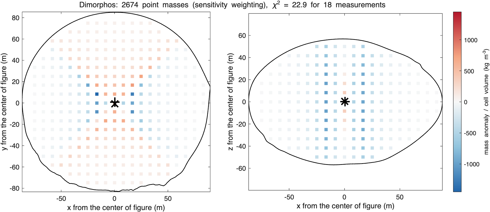

ROB-DATA4: Dimorphos#
Last edited October 27, 2026
In short. Mass is moved from the ends of the long x-axis toward ±y: changes sign (50σ) and the moments of inertia say the same (Ixx +13σ, Iyy −10σ). Dimorphos is measured to degree 2 and its three moments, 18 numbers, which several interiors fit. The two best by AIC are both a dense core 31 to 46 m toward −y with a torus and a dense layer (reduced χ² 0.08 and 0.65, 6 to 9 parameters); the sector grids and point masses fit with 4 to 5 effective parameters but not as closely. The GRASS surface point, which no solution was fitted to, decides: the core model predicts the lander's acceleration to 0.2%, the sector grids and point masses miss it by 10 to 11%.
| Kind | Best solution of the kind | Parameters | Reduced χ² | p | AIC | Mean squared residual, degrees 1–3 | GRASS acceleration |
|---|---|---|---|---|---|---|---|
| search | core, torus, layer | 9.0 | 0.08 | 1.00 | 18.7 | 0.09 | +2.0% |
| components | core placed toward −y; torus; layer | 6.0 | 0.65 | 0.80 | 19.8 | 1.05 | −0.2% |
| point masses | 2,674, equal weighting | 4.1 | 1.69 | 0.05 | 31.7 | 2.67 | −11.1%¹ |
| sectors | 2 × 4 × 8 | 4.8 | 1.71 | 0.05 | 32.2 | 2.33 | −10.4% |
¹ the sensitivity weighting; constant density gives −13.3%. (How to read these pages.)
1. What the measurements say#

C - C_CD 1-sigma sigma what it says
S11 -1.134e-02 3.756e-03 -3.0 center of mass toward -y
C20 -1.774e-03 8.575e-05 -20.7 J2 higher: mass toward the equator, away from the poles or the center
S21 1.316e-03 3.131e-04 4.2 mass toward +y in the north and -y in the south
C22 -4.940e-03 9.933e-05 -49.7 mass toward +-y more than +-x (elongation along y)
S22 9.092e-04 8.746e-05 10.4 mass toward longitudes 45 and 225 deg
Ixx 7.624e-03 5.741e-04 13.3 Ixx: mass farther from the x-axis
Iyy -5.154e-03 5.265e-04 -9.8 Iyy: mass closer to the y-axis
Izz 5.242e-03 7.116e-04 7.4 Izz: mass farther from the z-axis- is 50σ below constant density: the anomaly takes away the homogeneous body's elongation along x; +10σ turns what is left a little.
- The moments: Ixx 13σ higher and Iyy 10σ lower than constant density: mass farther from the x-axis and closer to the y-axis, that is, moved from the ends of x toward ±y. Izz 7σ higher: mass farther from the spin axis.
- J2 21σ higher: mass toward the equator.
- The center of mass is 1.8 m toward −y, 3σ at this precision.
2. Where the mass is#

Center of mass 1.79 m from the center of figure toward lat -8, lon -95 (3 sigma): the anomalous mass is on that side (or a deficit on the other).
Degree 2 (chi-square 2834 for 5): second moment of the anomaly axis, values 0.61, -0.22, -0.39 of their spread.
axis toward (largest): lat +9 lon 85 and lat -9 lon -95, +-2 deg
axis middle: lat +81 lon -97 and lat -81 lon 83, +-13 deg
axis away from (smallest): lat +0 lon -5 and lat -0 lon 175, +-12 deg
mass moved toward both ends of the axis through lat +9 lon 85 and lat -9 lon -95.
Rest of degree 2 (without the scaled homogeneous field): triaxial, values 0.54, -0.07, -0.46.
mass moved toward the axis through lat +12 lon 85 and lat -12 lon -95 and away from the axis through lat +0 lon -5 and lat -0 lon 175.
Each degree on the sphere (strongest excess / strongest deficit; rest after the scaled homogeneous field):
degree 2 chi2 2834 for 5: excess lat -10 lon -96, deficit lat +0 lon -6; rest: excess lat -12 lon -96, deficit lat +0 lon -6- Degree 2 moves mass toward an axis through longitudes 85° and −95° (±y), within 9° of the equator, and away from the x-axis. One value stands out (0.61 against −0.22 and −0.39): mass toward both ends of the y-axis.
- Degree 1: the center of mass toward longitude −95°: more of that mass at the −y end.
- So the model given to the fit was a core placed by its χ² profile along the center-of-mass offset (it went toward −y), with a torus about the z-axis and a surface layer for J2 and the moments.
3. The solutions compared#

- The search's core model matches every coefficient and moment within 1σ. The model with components leaves 2.5σ in and and 1.6σ in .
- The sector grids and the point masses, smoothed as much as the measurements allow, leave about 3σ in , and : with 18 numbers, the smoothing that keeps them consistent also keeps them from the largest coefficients.
AIC solution kind params chi2/nu p AIC res^2 1-3 largest exact2-4 exact5-10
1 search: core, torus (radii, axis), layer; 0 masses search 9.0 0.0754 1 18.7 0.0939 S11 0.95 0.00
2 core, placed; torus; layer components 6.0 0.647 0.8 19.8 1.05 S11 0.78 -0.94
3 core, placed; torus (height, axis); layer components 9.0 0.78 0.64 25.0 0.966 S11 0.79 -0.86
4 point masses (2674, equal weighting) point masses 4.1 1.69 0.05 31.7 2.67 C20 0.43 -0.00
5 point masses (2674, sensitivity weighting) point masses 4.6 1.71 0.05 32.1 2.41 C22 0.30 -0.30
6 sectors 2 x 4 x 8 sectors 4.8 1.71 0.05 32.2 2.33 C20 0.42 -0.14
7 sectors 1 x 4 x 8 sectors 5.3 1.73 0.05 32.5 1.38 S11 0.43 -0.16
8 two spheres along y components 8.0 2.21 0.015 38.1 1.39 C22 0.59 -1.86
9 ellipsoidal core from yaw 90; layer components 8.0 6.02 3.3e-09 76.2 7.87 C20 -0.11 -2.09
10 ellipsoidal core (position, axes); torus; layer components 9.0 6.51 2.5e-09 76.6 8.01 S11 0.10 -0.80
11 ellipsoidal core from yaw 0; layer components 8.0 12.9 9.3e-23 144.5 11 C21 -0.37 -0.36
12 core, placed; layer components 5.0 15.4 1.1e-35 210.4 16.4 C20 0.06 -0.14
13 core, placed components 4.0 15.2 1.4e-37 220.7 11.9 C20 -0.08 -0.58
14 core at the center of figure components 1.0 4.18e+04 0 710679.3 709 C20 -0.79 -0.16
Ordered by AIC = chi2 + 2 x params (Akaike information criterion: the fit with a penalty for every parameter; lower is better).
params: effective number of parameters; chi2/nu, p: the fit to every measurement (coefficients and moments, full covariance);4. The best solutions: a dense core toward −y, a torus and a dense layer#

component type center - cof (m) dist m lat lon drho kg/m^3 rho mass kg makes most of (sigma)
core sphere [ -4 -46 -6] 46 -8 -95 1165 +- 653 2548 1.31e+08 C22 -50, S22 +10, C20 -5
torus torus [ 0 0 1] R 56 a 22 tilt 0.2 1 90 0 90 +-1260 1473 5.06e+07 C20 -9, C22 -1, S22 +0
regolith layer 0 to 1 m deep NaN NaN NaN 935 +-1703 2318 9.52e+07 C20 -7, C22 +0, S22 -0
background 1383 kg/m^3 (bulk 1540); makes most of: the component's share of each coefficient in units of its 1-sigma
Why the components are where they are:
- The dense core toward −y makes most of the change of (−50σ in the search's model): mass on the y-axis lowers . Being on the −y side, it also makes the center-of-mass offset.
- The torus and the layer add mass in the equator and near the surface: J2 higher and the moments larger. In the search's model they are not resolved (their 1σ exceeds their densities); in the model with components the torus is +419 ± 170 kg/m³ and the layer +1790 ± 800 kg/m³ (a crust about 2 m thick at about 2970 kg/m³ over a background of 1180).
- The two core models differ in where they put the core: 31 m out at +2530 kg/m³, or 46 m out at +1165 kg/m³. The coefficients do not tell them apart; the surface point does (section 6).

5. The solutions side by side#

solution (AIC rank) moved (% M) excess at (m) deficit at (m)
1. search: core, torus (radii, axis), layer; 0 masses 4.47 [-4 -44 -6] [0 5 1]
2. core, placed; torus; layer 9.91 [-2 -27 -4] [0 4 1]
5. point masses (2674, sensitivity weighting) 5.88 [0 1 0] [0 -1 0]
6. sectors 2 x 4 x 8 2.25 [1 2 1] [0 1 0]
correlation of the cells of each pair:
1 2 5 6
1 1.00 0.67 0.21 0.31
2 0.67 1.00 0.23 0.13
5 0.21 0.23 1.00 0.40
6 0.31 0.13 0.40 1.00
moved: the mass above the bulk density M/V (equal to the mass below it), in 8 m cells; excess at, deficit at: where that mass is centered, from the center of figure.All four put more mass toward the ±y axis than toward ±x, which is what and the moments say, but in different ways. The two core models put the excess in one dense core toward −y (centered 44 and 27 m toward −y), with a dense crust around a slightly lighter interior; they correlate 0.67. The sector grid makes the outer sectors at both ends of the y-axis denser and those toward ±x lighter; the point masses put the excess in a band along the y-axis through the center, with lighter lobes on both sides along x. Both smooth solutions are nearly symmetric (their excess is centered within 2 m of the center of figure); they correlate 0.40 with each other and 0.13 to 0.31 with the core models. Whether the extra mass is one body on the −y side or spread over both ends, the coefficients do not decide (the center-of-mass offset is 3σ); the GRASS surface point does (section 6).
6. Independent check: the GRASS surface point#
ROB's package gives the gravitational acceleration at one point on the surface, 81 m toward −y, where the GRASS gravimeter of the Juventas lander would measure it. No solution was fitted to it; each predicts it from its interior:
surface point [-0.0 -80.8 -11.4] m; every model consistent with the coefficients and inertia, and the best of each kind
U (m^2/s^2) |a| (m/s^2) |a| vs % angle deg
given 2.451945e-03 3.588064e-05 0.000 0.000
homogeneous 2.325828e-03 3.109979e-05 -13.324 0.854
1. point masses (2674, sensitivity weighting) 2.350178e-03 3.191009e-05 -11.066 0.686
2. sectors 2 x 4 x 8 2.355223e-03 3.215641e-05 -10.379 0.679
3. sectors 1 x 4 x 8 2.364278e-03 3.240002e-05 -9.701 0.668
4. core, placed; torus; layer 2.476725e-03 3.581111e-05 -0.194 0.194
5. core, placed; torus (height, axis); layer 2.473348e-03 3.563225e-05 -0.692 0.229
6. search: core, torus (radii, axis), layer; 0 masses 2.464439e-03 3.659086e-05 1.979 1.373- Constant density predicts 13% too little acceleration there: the extra mass toward −y is under the lander.
- The model with components predicts the acceleration to −0.2% and its direction to 0.2°. The search's model, whose core is farther out and less dense, gives +2.0% and 1.4°.
- The sector grids and the point masses spread the extra mass over the whole ±y side and give −10% to −11%.
The coefficients cannot tell the core models from the smooth ones; a single surface measurement can.
7. Details#
model fitted to chi2/nu chi2/n fitted chi2/n others
core, placed; torus; layer degrees 1-2 1.55 0.706 0.000312
core, placed; torus; layer degrees 1-3 0.647 0.432 -
sectors 2 x 4 x 8 degrees 1-2 2.18 1.04 0.00196
sectors 2 x 4 x 8 degrees 1-3 1.71 1.26 -
point masses (2674, sensitivity weighting) degrees 1-2 2.2 1.02 0.00172
point masses (2674, sensitivity weighting) degrees 1-3 1.71 1.27 -
point masses (2674, equal weighting) degrees 1-2 2.14 1.1 0.00188
point masses (2674, equal weighting) degrees 1-3 1.69 1.31 -
Fraction of each degree's anomaly (exact values) reproduced by the fit to every degree, 1 - |model - given|^2/|given|^2:
model 1 2 3 4 5 6 7 8 9 10
core, placed; torus; layer 0.29 1.00 0.79 0.54 0.31 -0.80 -0.02 -1.90 -0.06 -3.19
sectors 2 x 4 x 8 -0.02 0.98 -0.09 0.37 -0.09 0.01 -0.04 0.15 -0.08 -0.81
point masses (2674, sensitivity weighting) -0.11 0.97 0.09 -0.15 -0.05 -0.31 0.09 -0.28 -0.07 -1.19
point masses (2674, equal weighting) -0.10 0.97 -0.07 0.40 -0.12 0.42 -0.10 -0.02 -0.27 0.07


